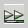

Die freie Animationssoftware ANIMAL kann Algorithmen veranschaulichen. ANIMAL ist eine Java-Applikation, mit der man die Einzelschritte von Algorithmen beliebig genau modellieren kann. Die Schrittfolgen können mit statischen Daten in einer AML-Datei abgelegt werden oder mit dynamischen Daten über AnimalScript definiert werden.
ANIMAL erlaubt, diese Schrittfolgen manuell vor und zurück durchzulaufen oder die gesamte Schrittfolge automatisch abzuspielen. Dabei haben Sie z.B. Optionen zur Geschwindigkeit und zum Zoomen in ANIMAL selbst.
ANIMAL wird mit CT1 ausgeliefert (siehe Menü Einzelverfahren \ Visualisierung von Algorithmen). Da ANIMAL eine Java-Applikation ist, müssen Sie vorher eine Java Runtime-Umgebung installiert haben (mindestens in der Version 1.7), damit CrypTool das ANIMAL-Programm aufrufen kann (das Java Runtime-Environment gibt es z.B. unter http://java.sun.com). Seit Animal 2.5.3 läuft Animal auch unter Java 9.
Die jeweils aktuelle Fassung von ANIMAL gibt es in Deutsch und Englisch unter http://www.algoanim.net/. Dort gibt es auch eine große Sammlung freier Animationen von Algorithmen aus ganz verschiedenen Bereichen.
Wenn man ANIMAL lädt, werden zwei Fenster geöffnet:
Ist das Anzeigefenster nicht sichtbar, kann man es im Steuerfenster über das Menü "Bearbeiten \ Animationsfenster anzeigen" aufrufen.
Das Layout des Anzeigefensters änderte sich mehrfach in seinem Lebenszyklus. Normalerweise hat es die folgenden Ikonen zur Bedienung des ANIMAL-Anzeigefensters:
 Regelt die Geschwindigkeit der Animation
Regelt die Geschwindigkeit der Animation
 Vergrößert
bzw. verkleinert die Darstellungsgröße
Vergrößert
bzw. verkleinert die Darstellungsgröße
Zum Anfang der Animation
 Zum vorherigen Schritt
Zum vorherigen Schritt
 Animation als inverse Slideshow abspielen
Animation als inverse Slideshow abspielen
 Animationsschritt zurück
Animationsschritt zurück
 Animation anhalten
Animation anhalten
 Ausführen des nächsten Schritts
Ausführen des nächsten Schritts
 Animation als Slideshow anzeigen
 Gehe zum nächsten Schritt
Gehe zum nächsten Schritt
 Zum Ende der Animation
Zum Ende der Animation
 Zum Beenden der Animationen müssen sowohl das Anzeigefenster als auch das
Steuerfenster von Animal geschlossen werden.
Zum Beenden der Animationen müssen sowohl das Anzeigefenster als auch das
Steuerfenster von Animal geschlossen werden.
Bemerkung 1:
Aus CT1 heraus wird die Animal-Jar-Datei nicht direkt gestartet, sondern über die Batchdatei animal.bat.
Bemerkung 2:
Die DES-Animation und die Nihilist-Animation enthalten "Titel" (Label),
die die Schritte der Animation strukturieren und clustern.
Deshalb wird zusammen mit dem Anzeigefenster auch ein Table-of-Contents-Fenster geöffnet.
Klickt man darin auf einen Titel (d.h. selektiert man eine Zeile), springt der Prozess im Anzeigefenster direkt zu dem entsprechenden Schritt.
Bemerkung 3:
Sie können das Table-of-Contents-Fenster auch von dem Menü
"Fenster --> Sprungziele anzeigen" im Animal Control Center öffnen.